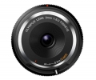

器材库 > APS画幅镜头 > BCL-0980 9/8.0 Fisheye

详细规格
镜头类型
鱼眼镜头
发布日期
2014-02-20
焦距
9mm
等效35mm画幅焦距
18mm
最大光圈
f/8
最小光圈
f/8
视角（对角）
140度
镜头结构
5片/4组
非球面镜片
2片
光圈叶片
1片
最近对焦距离
20cm
最大放大倍率
0.046倍
镜头卡口
Micro 4/3
防抖
否
颜色
黑色, 白色
尺寸
56 x 12.8mm
重量
30g
附件
镜头后盖 (LR-2), 使用说明书
promise3232014-08-09 12:504.17 分
操作性 4.00耐用性 4.00性价比 5.00解像力 4.00色彩还原 4.00机械结构 4.00
fabia2014-03-18 14:324.42 分
操作性 5.00耐用性 4.50性价比 5.00解像力 4.00色彩还原 4.00机械结构 4.00